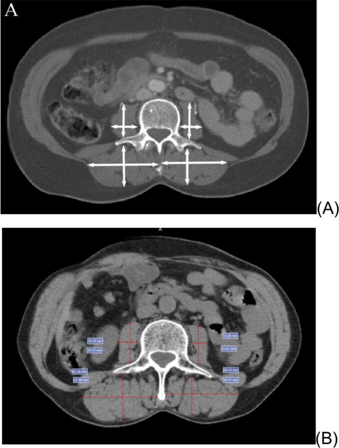
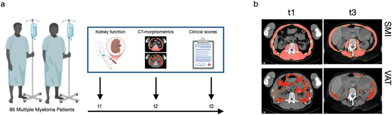
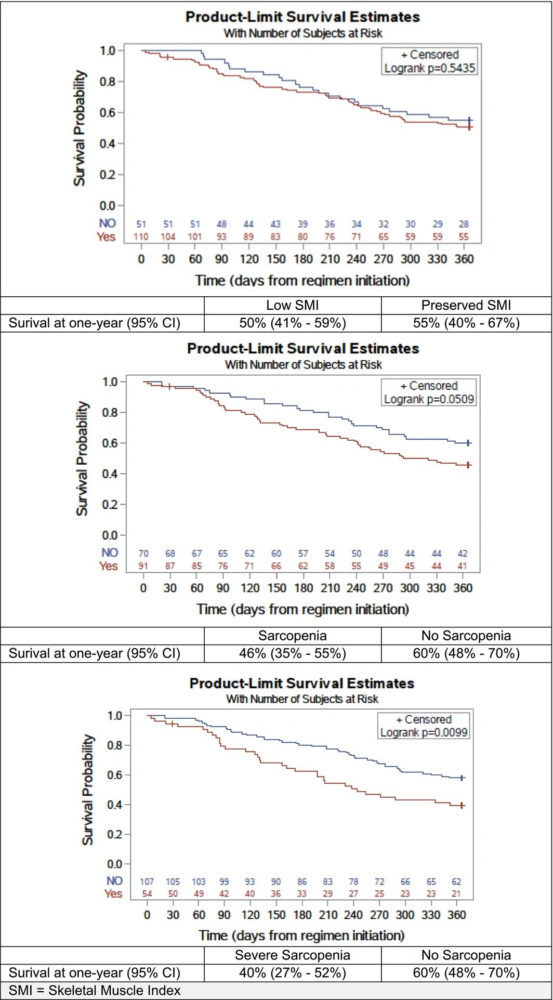

1468 — Suy mòn & sarcopenia trên CT ở bệnh nhân ung thư: SMI tại L3, mật độ cơ và "dùng ngưỡng nào" / Cancer-related sarcopenia on CT
Tags: pattern:teo-co pattern:mat-khoi-co pattern:giam-mat-do-co vung:bung score:SMI score:Martin protocol:CT-bung incidentaloma:sarcopenia
Mức chắc chắn (certainty): tổng hợp y văn (literature synthesis) — ghép phân tích thứ cấp RCT ở 161 người ≥ 70 tuổi ung thư giai đoạn muộn (Mattick và cs. 2026, J Cachexia Sarcopenia Muscle 17:e70388, PMC13602984, CC BY 4.0), đoàn hệ 210 phụ nữ ung thư cổ tử cung (de Araujo Resende và cs. 2026, Gynecol Oncol Rep 66:102174, PMC13453474, CC BY-NC), nghiên cứu dọc 86 ca đa u tủy có tổn thương cột sống (Kylies và cs. 2026, Brain Spine 6:106153, PMC13355679, CC BY) và tổng quan phương pháp luận về ngưỡng (Byrne & Gomez 2026, Nutr Clin Pract 41:1020–1047, PMC13419016, CC BY-NC-ND), cộng tổng quan 18 nghiên cứu ung thư đại–trực tràng (Chen & Gao 2026, Cancer Manag Res 18:564390, PMC13044798, CC BY-NC). Nhóm không có bệnh nhân của mình; các nghiên cứu đều hồi cứu hoặc phân tích thứ cấp, ngưỡng SMI khác nhau giữa các bài — mọi tỷ lệ dưới đây phải đọc kèm định nghĩa đã dùng.
Câu chốt: Trên CT bụng đã có sẵn (không cần chụp thêm), đo diện tích cơ tại một lát cắt L3 rồi chuẩn hóa theo chiều cao (SMI, cm²/m²) và mật độ cơ (HU). Nhưng khối cơ một mình không đủ: ở 161 người cao tuổi ung thư, SMI thấp đơn thuần không dự báo tử vong (log-rank p = 0,54), trong khi sarcopenia đủ tiêu chuẩn (khối lượng + lực cơ) làm tử vong 1 năm tăng gấp đôi (HR 2,12) và độc tính độ 3–5 tăng gấp đôi (OR 2,24). Báo cáo phải ghi ngưỡng đã dùng, HU mật độ cơ, và so với lần chụp trước — không ghi "teo cơ" chung chung.
1. Tổng quan bệnh học – cơ chế hình ảnh (TẠI SAO)
1.1 Vì sao CT đo được khối cơ — vật lý HU, không phải "cảm giác teo"
- Cơ vân 30–60 HU (dày đặc protein co kéo), mỡ dưới da/mỡ trong cơ −50 đến −190 HU, nước 0 HU, xương > 200 HU. Vì khoảng HU của cơ tách hẳn khỏi mỡ và khí, phần mềm có thể đếm điểm ảnh (pixel) trong một khoảng ngưỡng chuẩn: cơ −29 đến +150 HU; mỡ dưới da/mỡ trong cơ −190 đến −30 HU; mỡ nội tạng −150 đến −50 HU (ngưỡng dùng trong phần mềm SliceOmatic, trích trong PMC13419016). Diện tích (cm²) × độ dày lát cắt cho thể tích; chỉ cần diện tích lát cắt là đủ cho chỉ số.
- TẠI SAO chọn L3: lát cắt ngang L3 chứa đồng thời cơ thắt lưng, cơ cạnh sống, cơ thành bụng và cơ vuông thắt lưng — tức đại diện cho khối cơ toàn thân trong một lát; vì vậy SMI tại L3 là mốc được dùng nhiều nhất trong 18 nghiên cứu ung thư đại–trực tràng (một số bài dùng L3 psoas index hoặc L4, và các mốc này không hoán đổi được cho nhau).
- TẠI SAO mật độ cơ (HU) quan trọng ngang khối lượng: mỡ len giữa các sợi cơ (myosteatosis) làm giảm trung bình HU dù diện tích không đổi; mật độ cơ tham chiếu ở L3 khoảng 52 HU (nữ) / 56 HU (nam) ở người trẻ khỏe, và giảm theo tuổi xuống 25 HU (nữ) / 31 HU (nam) ở nhóm ≥ 75 tuổi (bảng tham chiếu trong PMC13419016). Vì vậy diện tích bình thường + HU thấp vẫn là cơ "kém chất lượng".
1.2 Vì sao mất cơ lại đổi số phận bệnh nhân ung thư
- Cơ là kho dự trữ protein: khi viêm hệ thống/khối u tăng chuyển hóa, cơ bị phân giải để cấp acid amin cho phản ứng viêm và cho gan tạo protein cấp tính → giảm dự trữ khiến nhiễm trùng, độc tính thuốc và mất chức năng nặng hơn.
- Thể tích phân bố thuốc phụ thuộc khối cơ ít mỡ: bệnh nhân ít cơ, nhiều mỡ có nồng độ thuốc/đơn vị cân nặng cao hơn → độc tính huyết học và thần kinh nhiều hơn; đồng thời giảm dự trữ làm giảm liều → giảm hiệu quả.
- Sarcopenia ≠ suy dinh dưỡng đơn thuần: béo phì vẫn có thể sarcopenic (BMI bình thường che mất), nên cân nặng/BMI không thay thế được CT.
1.3 Số liệu trụ cột (bắt buộc nhớ)
| Đại lượng | Con số | Nguồn |
|---|---|---|
| Người cao tuổi ung thư giai đoạn muộn (≥ 70 tuổi, n = 161) | 57% (91/161) đủ tiêu chuẩn sarcopenia; trong đó 59% (54/91) là sarcopenia nặng | PMC13602984 |
| Độc tính không huyết học độ 3–5 | 64% vs 44% (có vs không sarcopenia); OR 2,24 (KTC 95% 1,12–4,47) | PMC13602984 |
| Tử vong 1 năm | 46% vs 60% sống; điều trị đầu tay: HR 2,12 (1,14–3,93); sarcopenia nặng: 40% vs 60%, HR 2,08 (1,18–3,65); SMI thấp đơn thuần: p = 0,54 — không có ý nghĩa | PMC13602984 |
| Ung thư cổ tử cung (n = 210) | 37,6% (79/210) sarcopenia trước xạ; PFS HR 1,70 (1,15–2,51), OS HR 1,75 (1,11–2,75) ở phân tích đơn biến; đa biến: chỉ đáp ứng điều trị là yếu tố độc lập | PMC13453474 |
| Ung thư đại–trực tràng (18 nghiên cứu) | Tỷ lệ sarcopenia 12–60%; biến chứng hậu phẫu OR 3,12 (1,14–8,49) ở giai đoạn IV; 1.924 ca giai đoạn I–III: HR 2,15 (1,59–2,92) khi cả khối cơ và mật độ cơ giảm | PMC13044798 |
| Nút mạch cửa trước cắt gan (gộp 7 nghiên cứu, 599 ca) | Gan còn lại tăng ít hơn 10,87% (KTC 95% 3,45–18,30) ở nhóm sarcopenia | PMC13263961 |
| Ngưỡng SMI (Martin, hay dùng nhất) | Nữ < 41; nam BMI < 25: < 43; nam BMI ≥ 25: < 53 cm²/m² | trích trong PMC13602984 |
| Ngưỡng khác cùng tồn tại | Fearon: < 55 (nam) / < 39 (nữ); Derstine: ≤ 45,4 (nam) / ≤ 34,4 (nữ); tham chiếu người khỏe L3: 51,0 nam / 43,9 nữ | PMC13419016 |
| Mức độ hỗn loạn ngưỡng | 17 bộ ngưỡng khác cho sarcopenia và 32 ngưỡng cho myosteatosis trong 73 nghiên cứu | PMC13419016 |
- Điểm chết người về ngưỡng: cùng một bệnh nhân có thể "có sarcopenia" theo Martin nhưng "không" theo Derstine — vì vậy con số trong báo cáo chỉ có nghĩa khi ghi kèm ngưỡng.
2. Mẫu hình + chẩn đoán phân biệt theo kiểu hình (Gamut)
Mẫu hình khởi điểm: một lát cắt CT bụng ngang L3; câu hỏi là diện tích cơ bao nhiêu và mật độ cơ bao nhiêu.
- Kiểu A — khối cơ thấp, mật độ bình thường: mất cơ "sạch" (suy dinh dưỡng, tăng chuyển hóa, sau đợt bệnh cấp). Đáp ứng nhất với can thiệp dinh dưỡng – vận động.
- Kiểu B — khối cơ thấp + mật độ thấp: myosteatosis, gặp ở người già, béo bụng, kháng insulin, corticoid kéo dài; tiên lượng xấu hơn kiểu A ở nhiều ung thư.
- Kiểu C — khối cơ "bình thường" nhưng mật độ thấp, BMI cao: sarcopenic obesity ẩn — dễ bị bỏ qua vì cân nặng không giảm; cần ngưỡng SMI theo BMI.
- Kiểu D — mất cơ MỘT BÊN, không đối xứng: teo do bất động/thần kinh (sau đột quỵ, sau mổ háng, liệt chi), không phải sarcopenia hệ thống — đọc đối xứng hai bên.
- Kiểu E — diện tích cơ giảm "giả tạo": phù, truyền dịch, cổ trướng làm tăng cân và pha loãng HU, khiến bệnh nhân trông "nặng" nhưng cơ vẫn thấp.
Gamut theo bối cảnh: ung thư (hóa trị, xạ, sau mổ lớn), xơ gan/cổ trướng, bệnh thận mạn/lọc máu, ICU – bệnh nặng cấp, người già đa bệnh, sau ghép tạng. Trong ung thư, sarcopenia là biến số tiên lượng độc lập với giai đoạn u ở nhiều bộ môn — nhưng không phải ở mọi bộ môn (xem PMC13453474: mất ý nghĩa khi vào đa biến).
3. Bảng so sánh phân biệt (ma trận đối chiếu)
| Thực thể (entity) | Hình ảnh điển hình | Chốt vào (rule-in) | Chốt loại (rule-out) | Gợi ý xác nhận |
|---|---|---|---|---|
| Sarcopenia do ung thư (kiểu A) | L3: cơ mảnh, ranh giới rõ, mật độ cơ còn tốt (≈ 40–55 HU); mỡ nội tạng có thể ít | SMI dưới ngưỡng đã chọn + giảm so với lần chụp trước + lực cơ/chức năng giảm | SMI trên ngưỡng và mật độ cơ bình thường → không gọi sarcopenia | Đo SMI, so phim cũ 3–6 tháng; đo lực nắm/chủ động đứng lên 5 lần |
| Myosteatosis (kiểu B) | Cơ "lốm đốm tối", HU trung bình < ~33–41 HU tùy ngưỡng, dải mỡ len giữa các bó cơ | Mật độ cơ thấp dưới ngưỡng dù diện tích có thể bình thường | HU ≥ 45–50 và không có dải mỡ trong cơ → không myosteatosis | Vẽ ROI trong cơ thắt lưng/cạnh sống, đọc HU trung bình ± SD; đối chiếu pha cản quang |
| Sarcopenic obesity (kiểu C) | BMI ≥ 25–30, mỡ nội tạng nhiều, cơ mỏng so với cân nặng | SMI dưới ngưỡng theo BMI + mỡ nội tạng cao | BMI thấp + cơ mỏng = suy dinh dưỡng thuần, không phải "béo sarcopenic" | Dùng ngưỡng riêng theo BMI/giới, không dùng một ngưỡng chung |
| Teo cơ bất động/một bên (kiểu D) | Bất đối xứng rõ cơ thắt lưng–cạnh sống hai bên; ± thay đổi mỡ trong cơ bên teo | Chênh bên > ~10% + tiền sử liệt/bất động/mổ khớp háng | Đối xứng hai bên → teo hệ thống | So sánh trái–phải trên cùng lát; MRI/EMG nếu cần nguyên nhân thần kinh |
| "Giả" giảm mật độ do phù/dịch (kiểu E) | Thành bụng dày, phù, dịch tự do, cơ nhạt màu lan tỏa (không có dải mỡ khu trú) | Phù/cổ trướng/truyền dịch trong 1–2 tuần + HU giảm lan tỏa cả cơ và tạng | Có dải mỡ trong cơ + HU giảm khu trú → myosteatosis thật | Đọc lại phim cũ trước đợt phù; cân nặng/thể tích dịch |
| Người khỏe/VDV | Cơ dày, HU cao (≥ 50–60), mỡ nội tạng ít | SMI trên ngưỡng + HU cao | — | Không báo bệnh lý; dùng làm mốc so sánh |

Hình: (A) sơ đồ hướng đo cơ thắt lưng hai bên + cơ cạnh sống tại L3; (B) thước đo trên mặt cắt CT thật (đơn vị mm). de Araujo Resende LS và cs., Gynecol Oncol Rep 2026;66:102174 (PMC13453474), Fig. 1, CC BY-NC — nguyên bản, không crop/ghép.3.1 Ba bước đọc chuẩn (theo thứ tự, tránh overcall)
- Chọn đúng lát: L3 giữa đốt sống, thấy cả hai mỏm ngang và toàn bộ cơ thắt lưng; nếu lát bị lệch lên L2/xuống L4, SMI không so sánh được với lần trước.
- Đo diện tích trong ngưỡng −29…+150 HU, rồi sửa tay: loại ruột, mạch máu, hạch, xương; kiểm tra không "dính" mỡ dưới da vào cơ.
- Đo mật độ (HU trung bình) trong ROI cơ thắt lưng/cạnh sống; ghi cả diện tích và mật độ — một mình diện tích bỏ sót nhóm myosteatosis.
4. Protocol chụp + cách báo cáo + ngưỡng xử trí
4.1 Protocol (dùng lại CT có sẵn — không chụp thêm)
- Nguồn ảnh: CT bụng–chậu chẩn đoán đã có (không cần thêm liều); lát 5 mm, cửa sổ mô mềm W 400 / L 40.
- Mốc: L3 giữa đốt sống; ghi rõ nếu buộc dùng L4/T12 (không hoán đổi ngưỡng).
- Pha cản quang: ưu tiên không cản quang hoặc luôn cùng một pha khi so sánh dọc; cản quang làm tăng HU cơ → đừng so phim có/không cản quang.
- Đo: diện tích cơ toàn bộ tại L3 (−29…+150 HU, sửa tay) → SMI = cm² / (chiều cao m)²; thêm mật độ cơ (HU) và (tùy bài toán) mỡ nội tạng/mỡ dưới da.
- Thời điểm: trước điều trị (baseline) và mỗi 3–6 tháng hoặc trước mỗi dòng điều trị; trước mổ lớn ≥ 2 tuần để kịp "prehabilitation".
4.2 Cách báo cáo cho bác sĩ điều trị (5 dòng)
- SMI = ... cm²/m² tại L3, ngưỡng dùng: Martin/Fearon/Derstine → dưới/trên ngưỡng.
- Mật độ cơ = ... HU → myosteatosis có/không.
- So với lần chụp ... (ngày): thay đổi ... cm²/m² (....%).
- Kiểu hình: A/B/C/D/E (mục 2).
- Đề xuất: đánh giá lực cơ – chức năng; dinh dưỡng + vận động; cân nhắc giảm liều/đổi phác đồ khi sarcopenia nặng; không dùng SMI đơn thuần để quyết định ngừng điều trị.
flowchart TD
A[CT bụng có sẵn: chọn lát L3 giữa đốt sống] --> B[Đo diện tích cơ -29 đến +150 HU]
B --> C[SMI = cm2 chia chiều cao bình phương]
C --> D{SMI dưới ngưỡng đã chọn?}
D -->|Không| E[Đo mật độ cơ HU - kiểm tra myosteatosis]
D -->|Có| F[Đo mật độ cơ HU + so phim cũ]
E --> G{HU thấp dưới ngưỡng?}
G -->|Có| H[Myosteatosis - báo cáo mật độ cơ]
G -->|Không| I[Cơ bình thường - không báo bệnh lý]
F --> J{Có lực cơ hoặc chức năng giảm?}
J -->|Có| K[Sarcopenia đủ tiêu chuẩn - dinh dưỡng + vận động, xem lại liều thuốc]
J -->|Không| L[Chỉ khối cơ thấp - theo dõi, chưa tiên lượng nặng]
4.3 Ngưỡng xử trí thực hành
- Sarcopenia nặng (khối lượng + lực + chức năng giảm): hội chẩn dinh dưỡng – phục hồi chức năng trước khi bắt đầu dòng điều trị mới; xem lại liều theo độc tính chứ không giảm liều mù.
- Myosteatosis đơn thuần: báo cáo như yếu tố nguy cơ, không phải chẩn đoán; theo dõi cùng SMI.
- Giảm SMI ≥ 5–10% giữa hai lần chụp dù chưa dưới ngưỡng: coi là tín hiệu cảnh báo sớm, đánh giá lại dinh dưỡng/độc tính.
5. Biến thể bình thường và cạm bẫy
- Biến thể bình thường: người cao, gầy, trẻ có SMI cao; người châu Á có SMI thấp hơn người da trắng cùng tuổi → ngưỡng châu Á thường thấp hơn; vận động viên có mật độ cơ rất cao. Không overcall theo ngưỡng phương Tây mà không ghi nguồn.
- Cạm bẫy 1 — "một ngưỡng cho mọi người": 17 bộ ngưỡng sarcopenia + 32 ngưỡng myosteatosis trong 73 nghiên cứu (PMC13419016) → luôn ghi tên ngưỡng; đổi ngưỡng là đổi tỷ lệ mắc bệnh, không đổi bệnh nhân.
- Cạm bẫy 2 — dùng psoas index thay SMI: PI dễ đo nhưng bỏ sót cơ cạnh sống/thành bụng và kém tương quan với khối cơ toàn thân; một số nghiên cứu dùng L4 PI — không so trực tiếp với L3 SMI.
- Cạm bẫy 3 — so phim khác pha cản quang/khác lát: HU thay đổi theo pha và theo mức lát; so sánh chỉ có giá trị khi cùng pha, cùng mốc, cùng phần mềm.
- Cạm bẫy 4 — phù/truyền dịch: làm nhạt màu cơ lan tỏa và tăng cân → đọc là "teo nặng" hoặc "béo" sai; đối chiếu phim trước đợt phù.
- Cạm bẫy 5 — kết luận từ SMI đơn thuần: chính PMC13602984 cho thấy SMI thấp không dự báo tử vong (p = 0,54) trong khi sarcopenia đủ tiêu chuẩn thì có — đừng biến một chỉ số thành tiên lượng tuyệt đối.
- Cạm bẫy 6 — "teo cơ" trên báo cáo không có số: ghi cm²/m² + HU + ngày chụp trước; báo cáo định tính không dùng lại được cho nghiên cứu hay quyết định liều.
6. Tự lượng giá — Blind Quiz
Ca 1 — CT bụng, cần đo khối cơ: đo ở đâu và đo cái gì?
- Gợi ý lâm sàng: phụ nữ ung thư cổ tử cung, CT mô phỏng xạ trị trước điều trị.
- Câu hỏi: Lát cắt ở mức nào? Đo cơ nào, theo hướng nào? Nếu chỉ đo cơ thắt lưng (psoas) mà bỏ cơ cạnh sống thì sai lệch gì?
Bấm để hiện đáp án (findings + chẩn đoán)
- Dấu hiệu: (A) sơ đồ đo cơ thắt lưng hai bên (đường ngang + dọc) và cơ cạnh sống; (B) thước đo trên ảnh thật với số mm.
- Chẩn đoán/ý nghĩa: đo tại L3, lấy diện tích cơ (không chỉ một đường kính) để tính SMI = cm²/m²; bỏ cơ cạnh sống sẽ đánh giá thấp khối cơ và làm SMI không so sánh được với y văn dùng "total skeletal muscle area at L3".
- Nguồn ảnh: de Araujo Resende LS và cs., Gynecol Oncol Rep 2026;66:102174 (PMC13453474), Fig. 1, CC BY-NC.
Ca 2 — hai lần CT cách nhau vài tháng ở bệnh nhân đa u tủy: cái gì đã thay đổi?

- Gợi ý lâm sàng: đa u tủy có tổn thương cột sống, suy thận tiến triển, chụp toàn thân 3 lần trong nhiều năm.
- Câu hỏi: Hai hàng ảnh (SMI, VAT) khác nhau ở điểm nào? Vì sao cùng một bệnh nhân mà "teo cơ" lại đi kèm mỡ nội tạng thay đổi? Điều gì trên xét nghiệm giải thích tốc độ mất cơ?
Bấm để hiện đáp án (findings + chẩn đoán)
- Dấu hiệu: (b) mặt nạ đo SMI (hàng trên) và VAT – mỡ nội tạng (hàng dưới) tại thời điểm t1 và t3; khối cơ (đỏ) mỏng đi theo thời gian, mỡ nội tạng thay đổi song song.
- Chẩn đoán: sarcopenia tiến triển trong bệnh lý ác tính mạn — nhóm có eGFR giảm/albumin thấp mất SMI nhanh hơn có ý nghĩa; đây là lý do phải đo lặp lại chứ không chỉ một lần.
- Cơ chế: viêm hệ thống + giảm albumin + urê máu cao → tăng phân giải protein cơ; mỡ nội tạng tăng thay thế khối cơ đã mất.
- Nguồn ảnh: Kylies J và cs., Brain Spine 2026;6:106153 (PMC13355679), Fig. 1, CC BY.
Ca 3 — ba đường sống còn trên cùng một nhóm bệnh nhân: đọc thế nào?

- Gợi ý lâm sàng: 161 người ≥ 70 tuổi, ung thư giai đoạn muộn, bắt đầu phác đồ mới.
- Câu hỏi: Panel nào không có ý nghĩa thống kê? Vì sao thêm lực cơ lại làm khác biệt rõ hơn chỉ khối cơ? Kết luận thực hành cho báo cáo CT là gì?
Bấm để hiện đáp án (findings + chẩn đoán)
- Dấu hiệu: panel trên (chỉ SMI thấp): p = 0,5435, sống 1 năm 50% vs 55%; panel giữa (sarcopenia): p = 0,0509, 46% vs 60%; panel dưới (sarcopenia nặng): p = 0,0099, 40% vs 60%.
- Chẩn đoán: chỉ khối cơ không đủ — khi thêm lực cơ và chức năng, nhóm nguy cơ mới tách ra; đa biến: sarcopenia HR 2,12 (điều trị đầu tay), sarcopenia nặng HR 2,08.
- Thực hành: báo cáo SMI + mật độ cơ, và đề nghị đo lực cơ/chức năng thay vì kết luận tiên lượng từ SMI.
- Nguồn ảnh: Mattick LJ và cs., J Cachexia Sarcopenia Muscle 2026;17:e70388 (PMC13602984), Fig. 3, CC BY 4.0.
Bài liên quan chéo
- 100 – Tổng quan hệ Bụng
- 101 – Protocol bụng
- 1430 – Độc tính thần kinh sau CAR-T (ICANS)
- 1440 – Hội chứng Parkinson sau CAR-T (MNT)
Ảnh
1468_l3-psoas-ct_Diagram_PMC13453474-Fig1.jpg— Fig. 1, PMC13453474, CC BY-NC.1468_ct-morphometry_CT_PMC13355679-Fig1.jpg— Fig. 1, PMC13355679, CC BY.1468_km-song-con_Chart_PMC13602984-Fig3.jpg— Fig. 3, PMC13602984, CC BY 4.0 (chuyển từ webp sang jpg, không crop).- Nguồn + giấy phép từng ảnh:
images/CREDITS.md.
Không dùng để chẩn đoán độc lập khi chưa có người hướng dẫn.